达·芬奇通过《维特鲁威人》做出假设，认为动物世界中充满黄金比例。从那时起，人们在艺术、科学领域对人体不同的部位与黄金比例之间的关系进行了大量的研究。然而人体尺寸在中世纪就已经用作度量的标准。法国各个大教堂的建造者都使用一种由五个活节连杆组成的测量工具，五节的长度分别表示掌宽、小指尖到食指尖的最大距离——指距、小指尖到拇指尖的最大距离——手距、脚长以及肘部到指尖的距离——肘长。
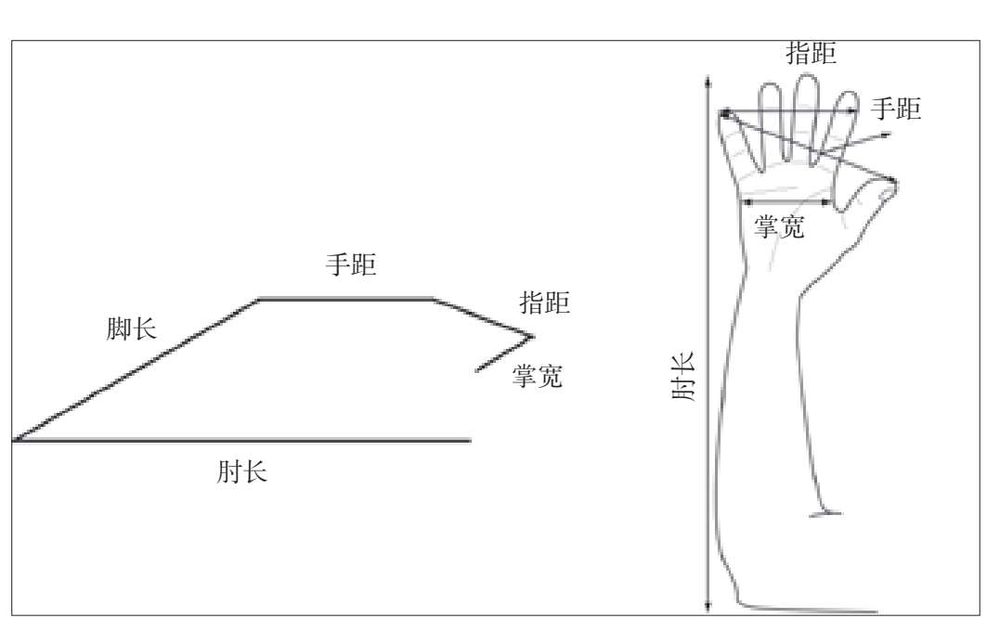
所有这些长度都是一个更小单位的倍数，人们称其为“法分”（等于1/12法寸），略小于2.5毫米（更准确的数值为2.247毫米）。下表是转换为公制单位后的计量长度。我们可以看到，第二列中的数字是斐波那契数列的连续项，因此相邻长度之间的比为黄金比例。这越发地不可思议，因为人们一开始是将任意选取的人体部位作为计量单位的。
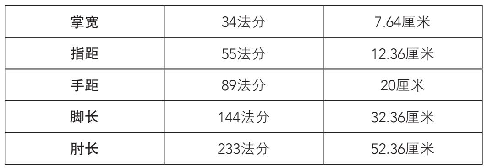
叶序与黄金比例
“phyllotaxis”（叶序）是由希腊词语“phyllo”（叶子）和“taxis”（顺序）组成。叶序这个词源自植物学领域，研究的是叶在植物茎上的排列方式。我们下面就会看到，叶序似乎遵循着几何与数字原理。通过对叶序的研究，人们已经发现了某些惊人的自然生长系统，这些系统似乎完全符合某些数学特点。
我们首先会看到，植物的叶子从来不会重叠生长。如果重叠生长，某些叶子就会遮住其他叶子所需要的阳光。为了避免这种情况，叶子需要特定的生长方式。通过详细的分析，人们已经可以从数学的角度对这种生长方式加以描述。
螺线
螺线是一条绕中心点旋转而不与自身相交的连续曲线。螺线有着不同的类型，不同的绘制方法，每种螺线都有自己的特殊性质。我们介绍的第一种螺线是阿基米德螺线。阿基米德最早从蜘蛛网上观察到了这种螺线，因此人们为了纪念他而将其命名为阿基米德螺线。我们可以用一根绳子绕杆旋转，然后小心地将绳子从杆上取下并放到平面上，保持绳子呈盘状紧贴在一起。这样，绳子就会形成一条阿基米德螺线，从中心点到绳上任何一处的距离都与绳子盘绕形成的总角度成比例。阿基米德螺线的主要性质之一是任意相邻两圈螺线之间的距离相等。
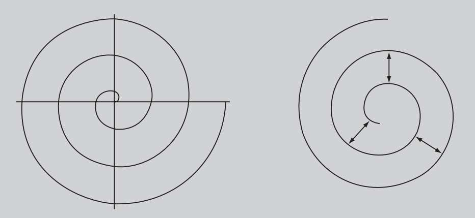
如果我们按照同样的步骤将一条绳子在圆锥体上缠绕，由此形成的螺线宽度会增大，这可以在软体动物壳的断面图中观察到。
螺线经过立体投影后就成为立体螺线。我们在某些动物的角上可以看到，立体螺线会随着自身的旋转而扩大。这些立体螺线称为圆锥螺线。立体螺线的宽度也可以保持不变（比如弹簧、螺旋梯或DNA的双螺旋结构），我们将其称为圆柱螺线。
约翰尼斯·开普勒（1571—1630）
德国天文学家约翰尼斯·开普勒在很小的时候就支持日心说。同为天文学家的波兰人哥白尼确立了日心说，表明行星绕太阳而不是地球运行。然而，官方学说一直认为地球是宇宙的中心，对此提出异议者会被判入狱。
开普勒十分赞同毕达哥拉斯学派“万物皆数”的观点。他根据自己的理解认为宇宙以五个柏拉图多面体（仅有的五个正多面体）为基础构成。开普勒试图为当时已知的六颗行星的轨道建立几何模型。1596年，他在自己的第一部著作《宇宙的奥秘》（Mysterium Cosmographicum）中介绍了这个模型。开普勒设法按照希腊人的“和谐”思想来解释宇宙。
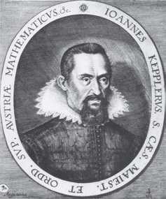
他对这一模型的描述如下：“通过地球所在的天球可以测量出所有行星的轨道。让正十二面体外切于地球轨道所在的天球，那么火星轨道就在正十二面体的外接天球上；让正四面体外切于火星轨道所在的天球，那么木星轨道就在正四面体的外接天球上；让正六面体外切于木星轨道所在的天球，那么土星轨道就在正六面体的外接天球上。现在，在地球轨道所在的天球内内接一个正二十面体，那么金星轨道就在正二十面体的内切天球上；在金星轨道所在的天球内内接一个正八面体，那么水星轨道就在正八面体的内切天球上。”
通过这种构造，身为数学家的开普勒创造了兼具美感与和谐的模型。这符合当时对于行星的观察，而且仅有较少的错误。然而在《宇宙的奥秘》出版后不久，开普勒本人就被迫承认这个模型与现实并不相符。
达·芬奇首先揭示了叶子生长的关键原理。这位伟大的天才意识到叶子沿着茎干以螺线状排列，每五片为一组完成一个生长循环，这说明五片叶子的总旋转角度是1/5的倍数。后来，开普勒观察到花朵通常是五边形、有五片花瓣，水果籽也经常排列为五角星形，比如常见的苹果。
19世纪，多亏了德国博物学家卡尔·申佩尔（1803—1867）和法国晶体学家奥古斯特·布拉维（1811—1863），数学和叶序才开始被联系到一起。两人都注意到，松果的左右螺线数量是斐波那契数列中的连续项。他们的研究表明，决定叶序排列方式的因素可以通过斐波那契数列相邻项的比值来表示。
从那以后，斐波那契数列和植物学就结合在了一起。1968年，美国数学家艾尔雷德·布罗索研究了10种加利福尼亚松树的4 290颗松果并证明，仅有74颗松果为特例，其余的全部符合斐波那契数列。样本的符合率为98.3％。经过相当长的一段时间后，科学界对此提出质疑并在1992年又重复了这项实验。这种事情经常发生。加拿大植物学家罗歇·V.让扩大了研究范围，他观察了650种松树的12 750颗松果。这一次有92%的样本符合斐波那契数列。
大部分高茎植物的叶子以螺线状分布，而且大都遵循着一种特定的分散规律，这种规律可见于所有植物物种，即两片连续的叶子构成的角度不变，我们将其称为“发散角”。发散角既可以用度数表示，也可以用分数表示，其中分子是从茎上的一片叶子到它上面相同位置的叶子旋转的圈数，分母是在这两片叶子之间沿螺线生长的叶子总数。
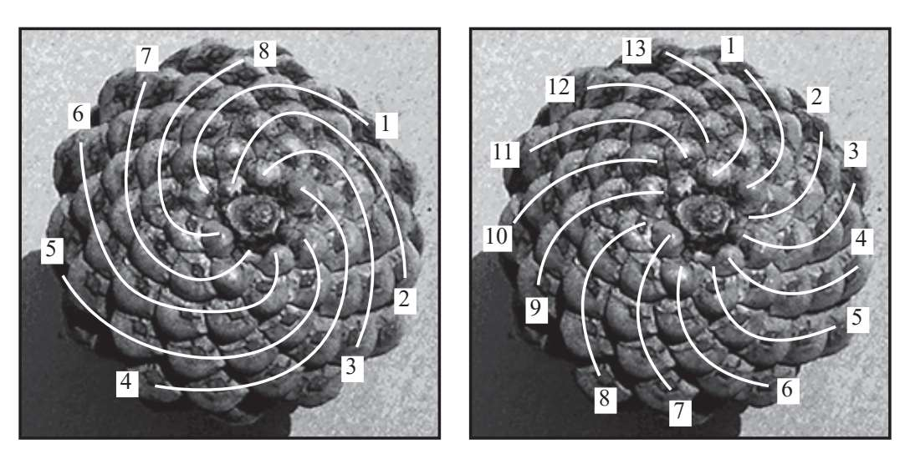
如图所示，松果在每个方向上的螺线数量（8条，13条）都是斐波那契数列中的相邻项。
在斐波那契数列中，某一项与它之后的第二项的比，即an/an+2组成了申佩尔—布劳恩级数，它根据叶子不同的分散角度对许多物种进行了分类。如果我们还记得斐波那契数列中两个连续项，即an+1/an的比值不断趋近于黄金比例，那么就可以说申佩尔—布劳恩级数的比值不断趋近于1/Φ2。数学证明如下：
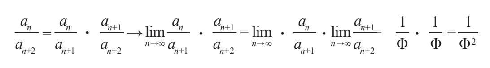
真正的难题是植物如何“知道”它们必须按照斐波那契数列排列叶子。下面告诉你答案。植物的茎上有一个圆锥形的生长点。我们从植物上方观察就会发现，最先长出的叶子通常以茎为中心向外伸展。布拉维发现，每片新叶与上一片叶子的角度大约为137.5°。通过计算（360°是一整圈），我们得到了137.5°角，有时人们把这个角称为黄金角。
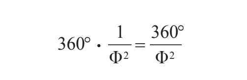
1984年，由N.里维耶率领的一组科学家反其道而行之，通过数学来研究植物学。他们发现，让葵花籽的生长角度等于黄金角，用数学算法得到的向日葵花盘会与真实的排列结构相似。里维耶的结论很有意思：由于生物需要同质性和相似的结构，因而大大限制了它们可能的生长形态。反过来，这条结论也可以解释为什么斐波那契数列和黄金比例会频繁地出现在叶序中。其他与磁场有关的实验也在其中发现了黄金螺线状的结构。
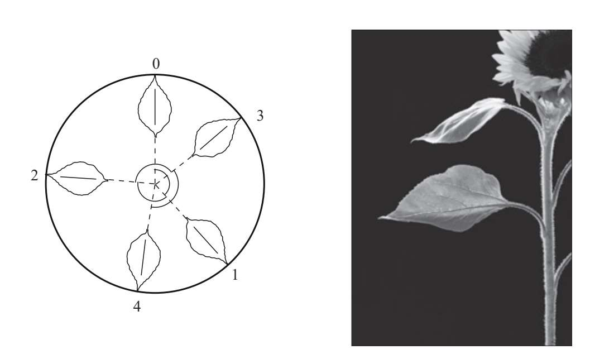
绕向日葵茎连续生长的每一片叶子与它的前一片叶子构成的角度约为137.5°。
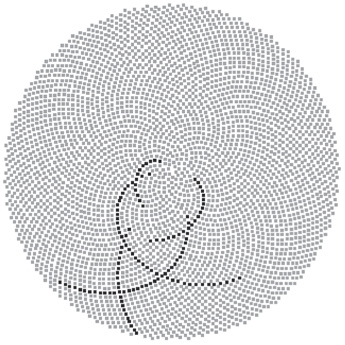
在计算机生成的虚拟葵花籽分布图中，我们可以清楚地看到大量弯曲度不同的螺线。在顺时针和逆时针两个方向上，长度相同的螺线数量通常是斐波那契数列中的相邻项。
德国数学家格里特·范·伊特森在1907年完成了一项植物学领域的经典实验。他按照137.5°角将连续的点串联成螺线，由此证明人眼观察到顺时针和逆时针两组螺线，这两组螺线的数量接近斐波那契数列中的两个相邻项。这一现象最有名的例子就是让人印象深刻的向日葵。我们观察向日葵时就会发现，葵花籽构成了顺时针和逆时针两组螺线。每组螺线的数量也是斐波那契数列中的相邻项。出现频率最高的几组数字是21和34、34和55、89和144。
这一切是生物固有的生长特点或者只是个美丽的巧合？
树的枝干与植物的叶子按照同一种方式排列。因此，一根树枝不会直接生长在另一根的上方，而是以螺线状排列。随着树龄的增长，树的尺寸会发生变化，但是树的高度与树枝长度之间的比例不会改变，同样不变的还有树枝之间的相对形状。因此，观察者只要知道了这种特点就能从远处辨认植物的种类，根本不需要检查植物的叶子或靠近观察。
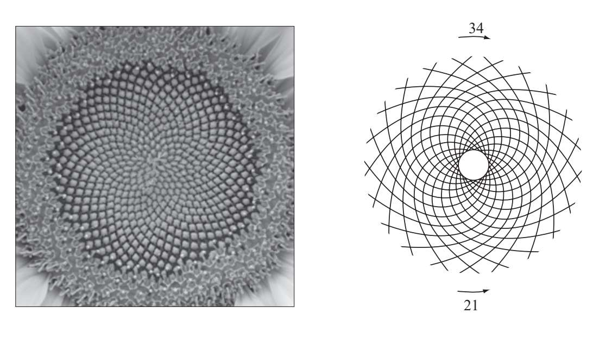
由34条顺时针螺线和21条逆时针螺线组成的向日葵花盘。
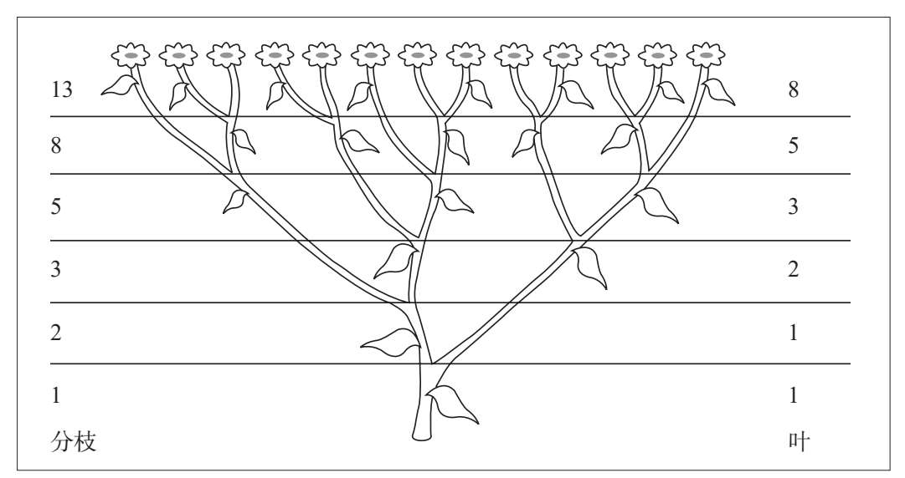
许多植物的分枝和叶子是根据斐波那契数列排列而成的，珠蓍（英文俗名：sneezewort；拉丁学名：Achillea ptarmica）便是其中一种。
花朵与花瓣
许多花的花瓣数也常常符合斐波那契数列中的某些项，例如丁香（3片）、莨（5片）、飞燕草（8片）、金盏花（13片）或紫菀（21片）。不同品种的雏菊有着不同数量的花瓣，但它们却一直都是斐波那契数列中的项（21、34、55、89）。
爱情故事中常见的小插曲便是陷入热恋的男女摘雏菊花瓣的情景，摘一瓣问一句：他爱我？他不爱我？人们会认为坠入爱河的数学家都很擅长摘花瓣，但事实并非如此。幸运的是，大自然和斐波那契数列都为偶然留下了可能，而这个秘密就藏在花朵里。虽然雏菊上的花瓣数是斐波那契数列的项，但它们有奇数也有偶数，在开始摘花瓣之前我们不知道一朵雏菊上有多少花瓣。因此我们的浪漫情事也就变得难以预测。

雏菊的花瓣数总是斐波那契数列中的一项，图中的雏菊有21片花瓣。
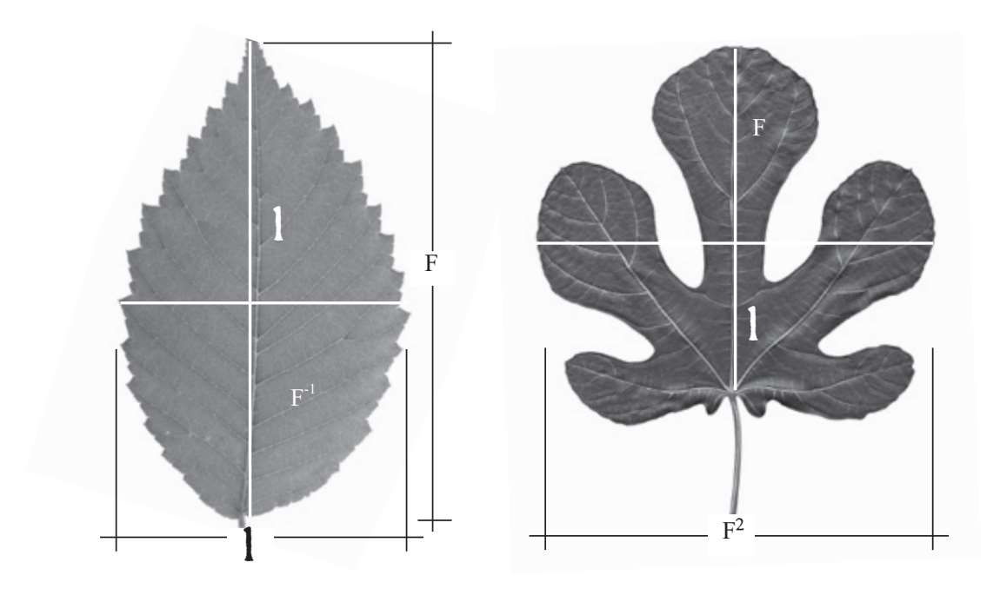
光叶榆（Ulmus glabra）和无花果树（Ficus carica）的叶子，根据它们与黄金比例之间的联系进行分割。
就像建筑中的黄金比例一样，有时植物表现出的黄金比例过于完美，因此让人感觉不那么自然。然而在植物学领域，严谨的实验不仅发人深思，而且凝聚了美学的思想。
鹦鹉螺
等角螺线或黄金螺线赋予了贝壳以形状，最不同寻常的例子莫过于鹦鹉螺。在壳体内部，鹦鹉螺通过增加腔室而变大，每个腔室都大于前一个，但鹦鹉螺的形状始终保持不变。新腔室出现在旧腔室的上方，二者的形状完全相同，只是新腔室更大一些：
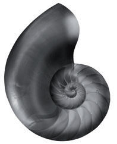
鹦鹉螺的螺线结构与旋转的急流十分相似，比如漩涡或从浴缸排水孔流走的洗澡水。在更加宏观的宇宙中，某些星系的旋臂也是这种螺线结构。
自然界中同样存在五角星结构，比如海星。